Пошаговое руководство по всем функциям приложения. Если что-то не работает — загляните в раздел частых вопросов внизу страницы.
Основное меню
Меню открывается поверх игры по горячей клавише (по умолчанию Tab) — игру сворачивать не нужно. Слева расположен список категорий и элементов, справа — предпросмотр выбранного.
Наведите мышь на строку или используйте W/S и стрелки — справа появится предпросмотр.
Пробел — открыть категорию или скопировать ответ; Esc — назад; повторное нажатие клавиши открытия — закрыть окно.
Внизу окна показывается, в какой категории вы сейчас находитесь.
Окно можно перетаскивать за верхнюю панель — положение запоминается.
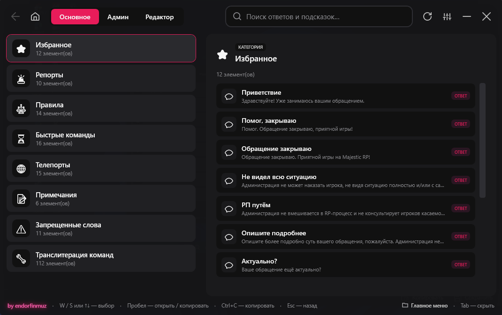
Поиск
Поле поиска находится вверху окна. Поиск умный: запрос разбивается на отдельные слова, и каждое слово ищется в названии, тексте и тегах элемента.
Например, запрос 4.1 ОПП найдёт нужный пункт правил, даже если «4.1» написано в тексте, а «ОПП» — в тегах.
Найденные слова подсвечиваются, а предпросмотр автоматически прокручивается к совпадению.
Чтобы выйти из поиска — очистите поле или нажмите Esc.
Избранное
Часто используемые ответы и команды можно закрепить в избранное — у выбранного элемента есть кнопка-звёздочка.
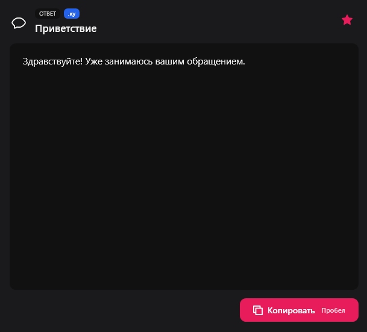
Все закреплённые элементы собираются в отдельной категории «Избранное» вверху списка. Именно избранное показывается в меню по правой кнопке мыши (см. ниже).
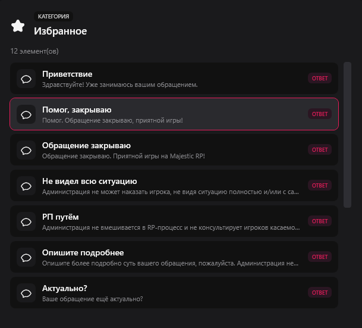
Команды: «Копировать» и «Исполнить»
У элементов типа «Команда» в предпросмотре две кнопки: «Копировать» (помещает текст в буфер обмена) и зелёная кнопка с иконкой ▶ «Исполнить».
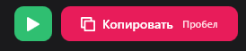
При нажатии «Исполнить» приложение:
скрывает своё окно (чтобы фокус вернулся в игру);
открывает игровой чат (клавишей T);
вводит команду и нажимает Enter — команда выполняется автоматически.
Команда отправляется как есть. Для шаблонов, где нужно вписать значение вручную, используйте «Копировать» или сокращение.
Меню по правой кнопке мыши (ПКМ)
Прямо в игре нажмите правую кнопку мыши — у курсора откроется компактное меню избранных ответов.
Клик по пункту — ответ вставляется в чат.
Можно сразу начать печатать — список будет фильтроваться по введённому.
Меню открывается только когда вы в игре; обычный правый клик в других окнах не затрагивается.
Поведение настраивается в Настройках: включение, количество пунктов, сортировка по частоте, авто-отправка по выбору.
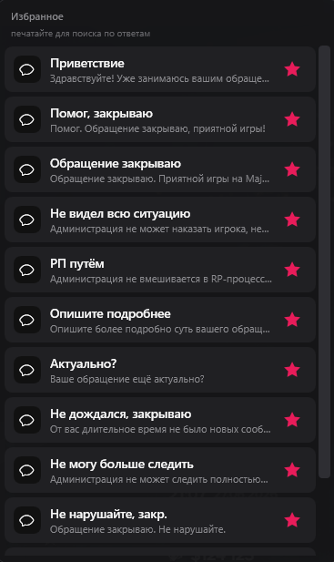
Режим «Админ»
Вкладка «Админ» — это набор до 10 команд, которые выполняются по очереди одним нажатием. Удобно для быстрого входа в админ-режим, выдачи прав и т.п.
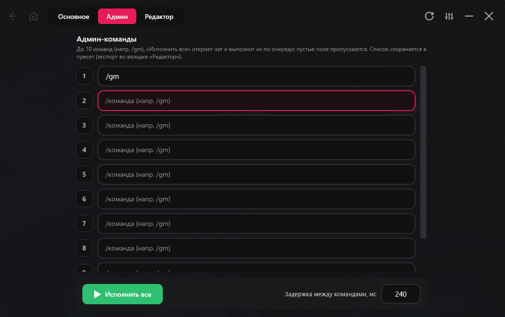
Впишите команды в поля (например, /gm). Пустые поля пропускаются.
Кнопка «Исполнить все» открывает чат и выполняет команды одну за другой.
Поле «Задержка между командами» — пауза между командами. Если команды не успевают отправиться — увеличьте значение.
Этот набор можно повесить на отдельную клавишу в Настройках и запускать без открытия меню.
Набор сохраняется вместе с базой и переносится при экспорте.
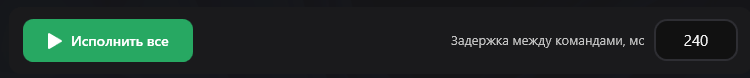
Редактор базы
Вкладка «Редактор» — здесь создаётся и настраивается вся база. Слева дерево элементов, справа — детали выбранного.
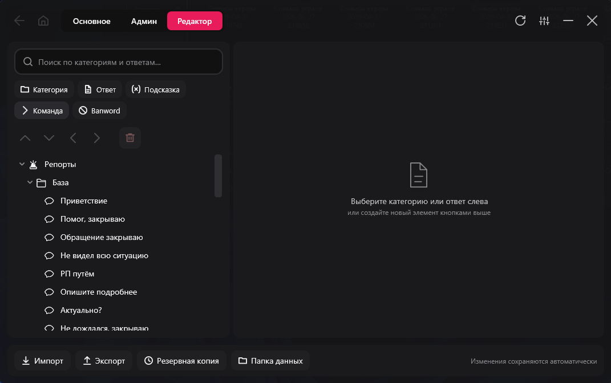
Создание и перемещение
Панель сверху разделена на две строки: создание новых элементов и действия с выбранным.
Перемещение: ↑ выше / ↓ ниже в списке, ◄ на уровень выше, ► вложить в предыдущий элемент.
Удаление: кнопка с корзиной (отделена от стрелок).
Поиск в редакторе помогает быстро найти нужный элемент в большой базе.
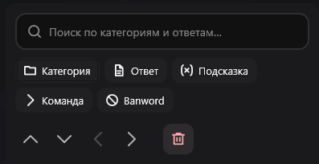
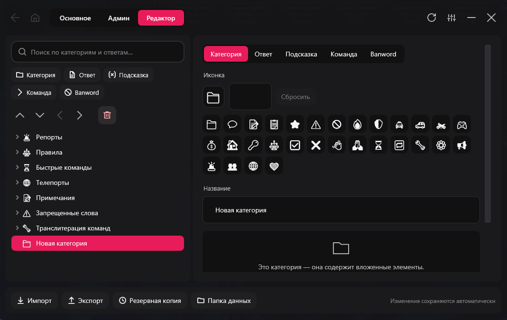
Сокращения (макросы)
У ответов и команд есть поле «Сокращение». Если набрать это сокращение в любом текстовом поле (в игре, Discord, блокноте) — оно автоматически заменится на полный текст.
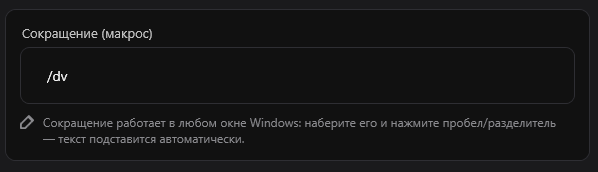
Например, сокращение .ку подставит заранее заданный ответ.
Подстановка срабатывает после ввода сокращения и разделителя (пробел и т.п.).
Сокращения можно включить/выключить и настроить их скорость в Настройках.
Синтаксис команды (курсор)
В тексте команды можно поставить символ | — после подстановки курсор встанет именно на это место. Например: /ajail | 15 NonRP — курсор окажется там, где нужно вписать ID.
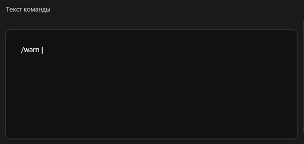
Скрытие категорий из основного меню
У категории есть переключатель «Скрыть из основного меню». Включите его, если категория нужна, но не должна мозолить глаза при обычном просмотре.
Скрытая категория не показывается при листании «Основного» меню.
При этом она по-прежнему находится через поиск и доступна в редакторе.
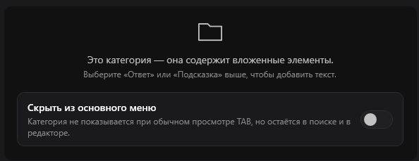
Кнопки сверху и «Перезагрузить модули»
В правом верхнем углу окна находятся кнопки управления: Перезагрузить, Настройки (шестерёнка), Свернуть и Закрыть.
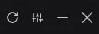
«Перезагрузить модули» — главная кнопка восстановления. Нажмите её, если перестали срабатывать сокращения или ПКМ-меню, либо если вы изменили базу, а изменения не применились. Кнопка заново читает базу и переустанавливает перехват клавиш и мыши — после этого всё снова работает.
Настройки
Открываются кнопкой-шестерёнкой. Все изменения применяются и сохраняются сразу.
Меню по ПКМ — включение, количество пунктов, сортировка по частоте использования, «отправлять сразу» (Enter после вставки).
Текстовые сокращения — включение макросов.
Скорость ввода сокращений — от ×0.5 (медленнее, но надёжнее) до ×15 (быстрее).
Верхний оверлей — маленькая надпись поверх экрана.
Диагностический лог — для поиска причин проблем (по умолчанию выключен).
Клавиша открытия меню и клавиша админ-режима — назначаются под себя.
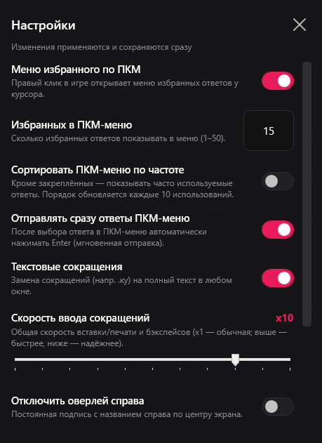
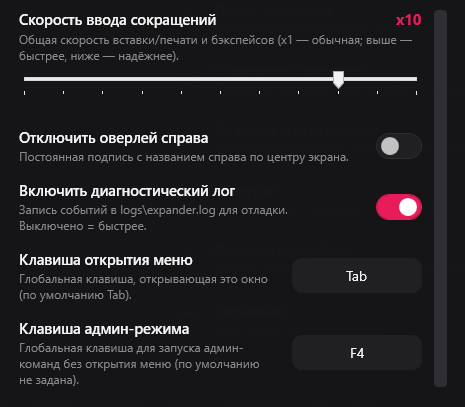
Импорт и экспорт базы
В нижней части редактора есть кнопки импорта, экспорта и резервного копирования.
Экспорт
При экспорте можно выбрать, какие категории включить в файл. Например, выгрузить всё, кроме категории «Репорты» — просто снимите с неё галочку.
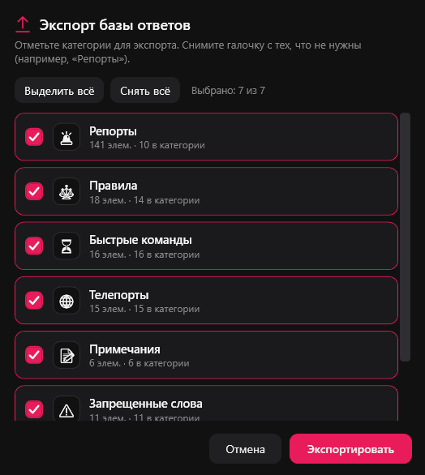
Импорт
При импорте программа спросит, как применить файл:
Добавить к текущему — категории с одинаковыми названиями объединяются, новые элементы добавляются, текущая база сохраняется.
Заменить полностью — текущая база заменяется содержимым файла.
Перед импортом можно автоматически создать резервную копию.
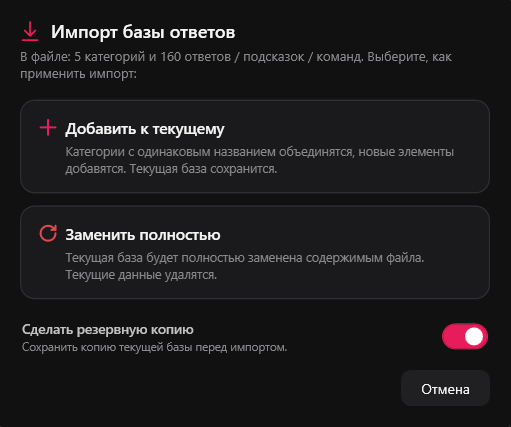
Частые вопросы
Перестали работать сокращения. Что делать?
Нажмите кнопку «Перезагрузить модули» (значок обновления справа сверху в окне приложения) — она переустанавливает перехват клавиш и чаще всего сразу решает проблему. Если не помогло — полностью перезапустите приложение (выход через значок в трее и повторный запуск).
Программа и сама периодически восстанавливает перехват, поэтому иногда достаточно просто подождать несколько секунд или открыть и закрыть меню.
Сокращение в игре срабатывает не с первого раза / с задержкой
Игровой чат иногда «просыпается» не мгновенно — первое сокращение сразу после открытия чата может не подставиться. Обычно последующие срабатывают нормально. Если проблема повторяется — снизьте «Скорость ввода сокращений» в Настройках (меньше значение = надёжнее) или нажмите «Перезагрузить модули».
В режиме «Админ» отправляются не все команды / они «слипаются»
Увеличьте значение поля «Задержка между командами» во вкладке «Админ». Команды отправляются по очереди, и каждой нужно время, чтобы открылся чат, ввёлся текст и сработал Enter. Чем больше задержка — тем надёжнее.
Изменил сокращение, но работает старое
Изменения в редакторе сохраняются с небольшой задержкой. Если вы сразу нажали «Перезагрузить модули», новая правка теперь применяется корректно. Если всё же используется старый вариант — нажмите «Перезагрузить модули» ещё раз.
ПКМ-меню не открывается
Проверьте, что функция включена в Настройках. Меню открывается только когда вы находитесь в игре — в других окнах работает обычный правый клик. Также в меню показываются только избранные (и, при включённой опции, часто используемые) ответы — если избранного нет, меню не появится.
Нажимаю клавишу открытия в «Админ» или «Редакторе», а окно не закрывается, как раньше
Сейчас клавиша открытия всегда закрывает окно из любой вкладки, а при следующем нажатии открывает «Основное». Это нормальное поведение.
Раньше открывалось на «Num −», теперь нет
Открытие редактора на «Num −» убрано — оно больше не нужно. Редактор открывается вкладкой «Редактор» внутри окна (или из меню в трее).
Меню или список немного подлагивают
В свежих версиях предпросмотр и поиск оптимизированы — лаги при наведении на список и при наборе в поиске устранены. Если вы давно не обновлялись — скачайте актуальную версию.
Антивирус ругается на файл
Это ложное срабатывание: приложение не содержит вредоносного кода, работает офлайн и ничего не собирает. Файл проверен на VirusTotal. При необходимости добавьте программу в исключения антивируса.
Где хранятся мои ответы и настройки?
Локально на вашем ПК, в папке %AppData%\EvergreenHelper. Открыть её можно через меню в трее → «Папка с данными». Там же лежат резервные копии и логи.